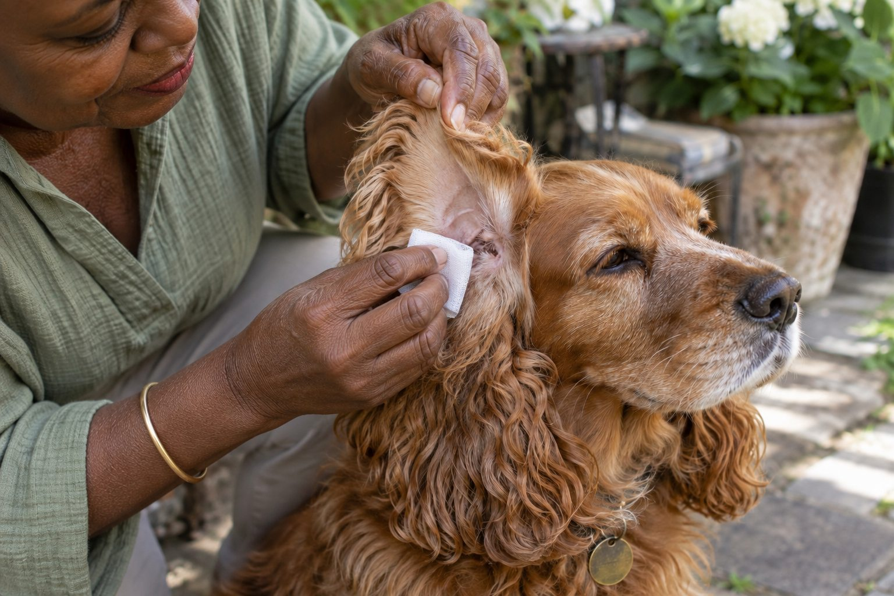

Clean only when needed, use a dog-specific ear cleaner, and stop if the ear is painful, red, swollen, or producing discharge.
Some dogs rarely need ear cleaning. Others, especially dogs with floppy ears or frequent swimming, may benefit from occasional maintenance. The safest routine starts with a quick look and a willingness to leave a healthy ear alone.
Check the ear before cleaning
A healthy ear may have a small amount of pale wax but should not have a strong odor, marked redness, swelling, or obvious discomfort. Compare the two ears and notice whether your dog is shaking their head or scratching. These signs can point to a problem that cleaning alone will not address.
If the ear looks sore or your dog pulls away in pain, contact a veterinarian before putting anything into the canal. Cleaning an inflamed ear can hurt and can make it harder for the veterinarian to assess what is happening.
Begin by deciding whether the ear should be cleaned at all. A healthy ear without unusual discharge, odor, redness, or discomfort often needs little intervention. Lift the outer flap gently and compare both sides in good light. Note whether your dog pulls away from one ear, shakes the head repeatedly, or scratches in a focused way. Those details are more useful than trying to make the inside look spotless. Never probe deeply to inspect a canal you cannot see.
An ear that is painful, swollen, bleeding, or strongly smelly needs veterinary advice before you add liquid or a swab. Cleaning a sore ear can make it more painful and may obscure signs the clinician needs to assess. If your dog has a history of repeated ear trouble, follow the individual plan from your veterinarian rather than a generic schedule. A photo of the outer ear and a note about when the change began can help you describe the problem during a call.
A gentle cleaning routine
Prepare cotton pads, a towel, treats, and an ear cleaning solution labeled for dogs. In a quiet place, lift the ear flap and follow the cleaner’s directions. Usually you place the recommended amount in the canal, massage the base of the ear gently, let your dog shake, and wipe the visible outer area.
Use cotton or gauze only where you can see. Never push a cotton swab into the ear canal; it can pack debris deeper or cause injury. Keep the session short and reward cooperation. If your dog becomes stressed, pause and try another time or ask a groomer or veterinarian for help.
If your veterinarian has advised routine cleaning, use the specific dog ear product and amount they recommend. Read its label before starting. Set out gauze or soft cotton pads, a towel, and treats so the session can stay short. Gently hold the ear flap, apply the cleaner as directed, and allow the dog to shake. Wipe only the material that moves into view; pushing cotton into the canal can pack debris farther in and can injure delicate tissue. A second person may help with treats, but restraint should remain calm and light.
Work one ear at a time and stop if the dog shows pain. Reward cooperation at small stages rather than waiting until the end. If the dog dislikes the bottle, first practice handling the outer ear without liquid. On another day, bring the bottle near the ear and reward calm behavior. This preparation can make necessary care safer. Do not pour household liquids, oils, or peroxide into an ear because a home remedy seemed effective for another pet.

How often should you do it?
Frequency varies. A dog with clean, dry ears may not need routine cleaning, while a swimmer may need more frequent checks. Follow the advice of your veterinarian if your dog has recurring ear issues. Overcleaning can irritate sensitive skin.
Make ear checks part of brushing or a weekly grooming routine. That way you are more likely to spot a change early without automatically reaching for a bottle.
Frequency depends on the dog and the veterinarian's reason for recommending cleaning. Some dogs need care after certain activities; others need only an occasional check. More cleaning is not always better. Repeated moisture or irritation from unnecessary products may complicate an already sensitive ear. If your dog swims, ask whether any after-swim routine is appropriate for that particular ear history. Keep the outside dry, but do not assume a wet outing means you must put liquid into the canal.
Use a simple log if ear concerns recur: date, which side, odor, visible material, head shaking, and any product used. Record whether symptoms improve, return quickly, or shift sides. This can reveal a pattern for the veterinary team without you trying to diagnose yeast, bacteria, allergies, or other causes from appearance alone. Ear problems can look alike to an owner. A clinician may need to examine the canal and sample material before selecting treatment.
When to get professional help
A strong smell, dark discharge, persistent head shaking, a tilted head, or pain warrants a veterinary appointment. A veterinarian can determine the underlying cause and recommend the right treatment. Avoid leftover drops or home mixtures, which may be unsuitable for the specific problem.
The shape of the outer ear changes how easy it is to see, but it does not prove that one breed needs constant cleaning. Long floppy ears can make the opening less visible, while hairy ears may trap debris, yet the individual dog's comfort and medical history still guide care. Never pluck ear hair or use a drying product just because you saw it recommended for a breed. Ask a groomer or veterinarian which handling is appropriate if hair blocks your view.
If a dog has been treated for an infection, use medication exactly as prescribed and attend any recommended recheck. The ear can appear cleaner before the underlying problem has resolved. Do not reuse old drops for a new episode or share medication between pets. If you cannot safely administer treatment, tell the clinic; they may offer a different method or demonstrate the technique. Good home care includes knowing when to stop and ask for help.
Practical details
What a safe session actually looks like
Choose a quiet place where your dog can stand or sit comfortably. Let the dog sniff the bottle, touch the outside of the ear briefly, and reward calm cooperation. Lift the ear flap and look before adding solution. If the ear is sore, smelly, or full of discharge, put the bottle away and call the clinic. Cleaning first can be painful and may remove material a veterinarian wants to examine.
When the ear looks healthy and cleaning is appropriate, follow the product label or your veterinarian's instructions. Apply the stated amount without forcing the nozzle deep into the canal. Gently massage the base of the ear, step back for the inevitable shake, and wipe only what you can see. A soft pad should come away with debris, not blood. End with a reward and a dry outer ear.
Before you open the cleaner, check four things
- Appearance A little pale wax can be normal; marked redness, swelling, sores, or heavy discharge are reasons to stop.
- Smell A strong or unusual odor warrants veterinary advice rather than a stronger home-cleaning product.
- Comfort Head shaking, pain when touched, or a sudden head tilt changes this from grooming to a health concern.
- Equipment Have a dog ear cleaner, soft cotton or gauze, a towel, and rewards ready; leave swabs out of the canal.
The frequency question
An ear-check schedule is different from an ear-cleaning schedule. Check ears while brushing or after swimming, but clean only when needed or when a veterinarian has given a plan. Dogs with upright ears may stay clean with little intervention. Dogs with floppy ears or repeated swimming may need closer observation, yet shape alone does not justify daily cleaning.
If a veterinarian recommends a particular interval, ask what change should prompt a call instead of another cleaning. Recurrent issues may require examination and treatment. Repeated use of cleaner without understanding the cause can irritate skin or delay care. Keep a note of which ear is involved, whether the problem follows water exposure, and how quickly it returns.
Handling a dog who dislikes ear care
A dog that backs away is giving useful feedback. Break the task into tiny stages across several days: show the bottle, touch the shoulder, lift the ear for one second, then reward. Practice when the dog is well, not only when the ear is already painful. You can ask a veterinary nurse or groomer to demonstrate a gentle hold that does not trap the dog.
Avoid pinning the dog down to finish a routine cleaning. Fear can make the next session harder, and sudden movement raises the risk of injury. If the dog will not tolerate cleaning, a professional can help decide whether it is necessary and how to do it safely. Comfort matters as much as a technically correct technique.
A useful routine takes less time than a stressful one. Once a week, glance at the outer ears during a relaxed moment, notice any new odor, and check whether your dog accepts ordinary touch. This creates a baseline, so a sudden change is easier to recognize. If everything looks and smells normal and the dog is comfortable, there may be nothing else to do. If an ear seems different, record the observation and decide whether a call is warranted.
Seek timely advice when your dog repeatedly shakes the head, tilts it, cries during handling, develops swelling, or has visible discharge. Seek urgent guidance for severe pain, balance problems, or a rapidly swelling ear flap. Until a clinician advises otherwise, avoid deep cleaning and keep the dog from scratching if you can do so safely. The goal of home checks is early recognition and gentle upkeep, not replacing an examination.
Make ear checks part of a calm whole-body routine. While petting your dog, briefly look at the outer ears, then move on to the coat, paws, and eyes. This creates a familiar handling pattern rather than a sudden inspection only when something is wrong. If you notice a difference, compare both ears and note whether the dog resists one side. Do not attempt to clean away every visible bit of normal wax. The goal is to recognize a change from that dog's baseline and follow the veterinarian's individual cleaning instructions.
After swimming, bathing, or grooming, watch whether the dog shakes the head more than usual. Mention persistent shaking, discharge, odor, or discomfort to the clinic. If a prescription product is used, confirm whether routine cleaner should be used before, after, or separately; products are not always meant to be combined. Keep the bottle tip from touching the ear and store medication as directed. A simple, well-understood plan is safer than improvising when an ear appears irritated.
A realistic ear care routine
Choose a quiet moment when your dog is relaxed, and look at both ears before you reach for a cleaner. Note whether one ear differs from the other in smell, color, discharge, or sensitivity. A brief inspection can tell you when routine cleaning is appropriate and when the ear needs a professional examination first. Reward calm cooperation and stop if your dog pulls away repeatedly; forcing the process can make the next attempt harder.
If your veterinarian has recommended a cleaning product, keep that exact product and the instructions together. Have cotton or gauze and a towel within reach, then work on one ear at a time. Do not insert a cotton swab deep into the canal. Record any recurring odor or head shaking so your veterinarian can see a pattern rather than a single isolated observation.
Continue exploring
For a broader routine, read How Often Should You Bathe Your Dog?, How Often Should You Trim Your Dog's Nails?, and How to Fit a Dog Harness for Comfortable Walks.
Frequently Asked Questions
Can I clean my dog's ears with water?
Plain water can leave moisture behind and is not a substitute for an appropriate ear cleaner.
Should I use cotton swabs?
Do not insert swabs into the canal. Wipe only the part of the ear you can see.
Why does my dog shake after ear cleaning?
A brief shake can be normal after solution is applied. Continued shaking or discomfort calls for a check.
Editorial references
These resources informed the general guidance in this article. They do not replace advice tailored to your pet.
This guide offers general information. Your pet’s age, health, and history may call for a different plan. For medical concerns, ask your veterinarian.